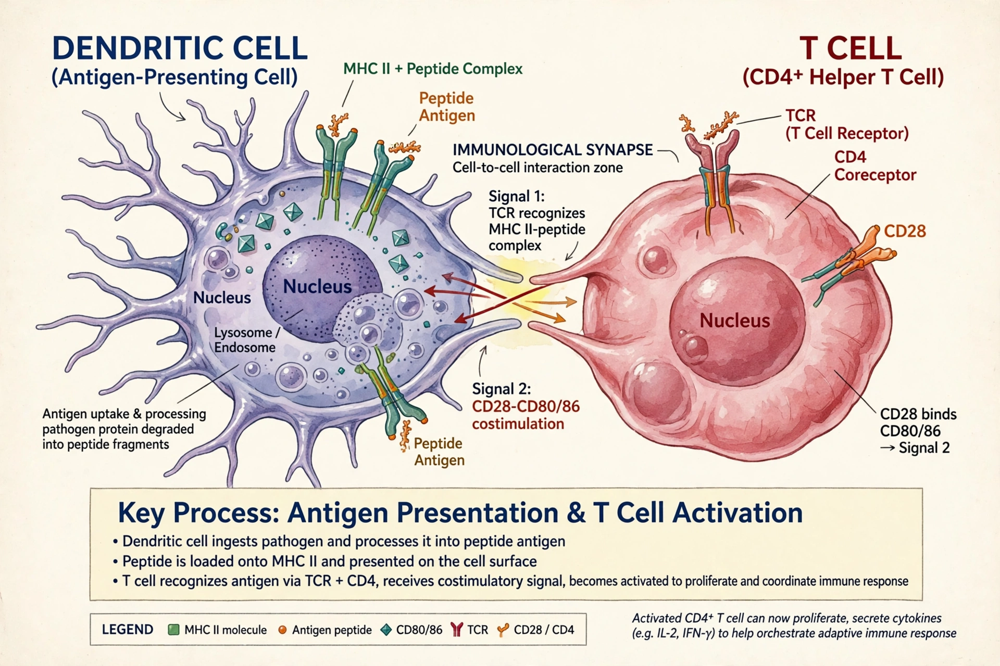

Antigen-presenting cell
An antigen-presenting cell (APC) is a cell that displays antigens bound to major histocompatibility complex (MHC) molecules on its surface, allowing T cells to recognise them and mount an adaptive immune response. The principal professional APCs are dendritic cells, macrophages and B cells.

| System | Immune system |
|---|---|
| Main types | Dendritic cells, macrophages, B cells |
| Key molecules | MHC class I, MHC class II, CD80/CD86 |
| Function | Activation of T cells |
Professional and non-professional APCs
Professional APCs constitutively express MHC class II and co-stimulatory molecules such as CD80 and CD86. Dendritic cells are the most potent activators of naive T cells; macrophages present antigen mainly to already-activated effector T cells at sites of infection; B cells present antigen captured by their surface antibody. Almost all nucleated cells can act as non-professional APCs by presenting endogenous peptides on MHC class I to cytotoxic T cells.
Antigen processing
Extracellular proteins are internalised, degraded in endolysosomal compartments, and loaded onto MHC class II for recognition by CD4+ helper T cells. Cytosolic proteins are processed by the proteasome and presented on MHC class I to CD8+ cytotoxic T cells. Dendritic cells can also cross-present exogenous antigens on MHC class I, priming cytotoxic responses against viruses and tumours.
Clinical relevance
APCs are central to vaccine design and cancer immunotherapy; dendritic-cell vaccines such as sipuleucel-T exploit their priming ability, while defects in antigen presentation contribute to immunodeficiency and tumour immune evasion.
See also
B cell · Dendritic cell · MHC · T cell